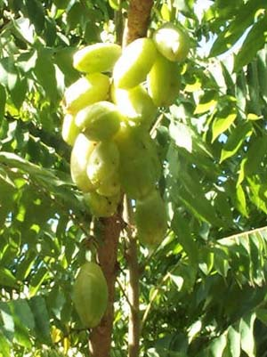

|
ECONOMICALLY
IMPORTANT PLANTS OF INDIA |
| Under-utilized Food and Fodder species and their wild relatives | Contributed by Ms.M.L Annapurna And Dr. Dhanapal, UAS, Bangalore |
Averrhoa blilmbi Linn
Taxonomic Details

----- Correct Name
----- Classification
----- Synonyms
----- Common Names
Other Biological Details
----- Habit and Habitat
----- Diagnostic Features
----- Reproductive Biology
---------- Breeding System
---------- Phenology
---------- Pollinators
---------- Seed Biology
---------- Seed Germination
------ Cultivation
----- Major Pests and Diseases
Economic Potential and Uses
----- Parts Used
----- Uses
----- Harvesting Practices
----- Produce and Products
----- Chemistry
----- Processing Techniques
----- Other uses
----- Economic Potential to the
Country
----- Export Potential
Miscellaneous Information
Literature
BioticZone:Tropics.
GERMPLASM: Reported from the Indochina-Indonesian Center of Diversity, bilimhi, or cvs thereof, is reported to tolerate high pH, insects, laterites, low pH, and slope. Many of the wild fruits are quite sour, but many superior sweet-fruited cvs have been selected
Availability :
Misc: Hotter parts, Manasagangotri and Throughtout India,
Country: Asia, India, Malaya, Moluccas and Tropical Countries.
Zone: East,South and West.
State: Karnataka, Kerala, Maharashtra, Tamil Nadu and West Bengal.
District: Bombay, Hassan, Mysore and Tiruchi.
Status :
DIAGNOSTIC
FEATURES
Small tree,
5-12 m tall, with the leaves crowded at ends of branches.
Leaves
compound, imparipinnate, 20-60 cm long, alternate, the leaflets 11-37, subopposite
or alternate, the terminal one 3-7.5 cm long, 2-2.5 cm wide, ovoid, oblong to
oblong-lanceolate; base rounded and somewhat oblique, the tip acute or acuminate,
short-petiolate, pale beneath. Flowers aromatic, dark red or red-purple, arising
from the trunk and branches in short softly hairy panicles to 15 cm long, pentamerous,
ca 2.5 cm long. Fruits resembling small cucumbers, 4-10 cm long, oblong with
rounded edges, sometimes faintly 5-angled, produced in clusters. Seeds 5-8 small,
flat, embedded in the acid to sweet, green or greenish-yellow pulp, ca 6 mm
long.2'5-313. The wood is white, tough, soft and even-grained.
REPRODUCTIVE
BIOLOGY
Breeding
System :
Phenology :
The flowering occurs during March-May.
In India and Florida, flowering commences in February, fruiting until December.
Fruits hand-picked when ripe.
Pollinators:
Seed Biology :
Seed Germination :
Propagated
mainly from seeds, which being very small, are usually sown
in pots under cover. Seedlings planted out when about 45-60 cm tall.
Improved varieties
propagated by layering or more frequently by marcottage.2
Cultivation:
It has been naturalized in India and has run
wild in the tropical parts of the country. The plant is propagated by seed.
Budding has been tried and found unsuccessful. It is grown in gardens through
the plains, and is also cultivated in Burma and Ceylon. The trees yield fruits
during midsummer.
MAJOR PESTS & DISEASES
Pests:
Diseases:
The following fungi are known to attack bilimbi: Cercospora wellesiana, Asterina venustula, and Corticium salmonicolor.
Parts used:
Fruits
both raw as well as ripe. and flowers.,
Harvesting Practices
In
India and Florida, flowering commences in February, fruiting until December.
Fruits handpicked when ripe.
Produce and Products;
Jellies,
preserves, pickles, candied fruits
and chetneys.
Kirtikar and Basu's Illustrated flora of Indian Medicinal Plants K.S.Mhaskar, E.Blatter, J.F.Caius
Sasya Sahyadri- A CD on Plants of Western Ghats, 2003, K.N. Ganeshaiah.
The Wealth of India ,2000 A dictionary of Indian Raw Materials and Industrial Products. Raw Materials,First Supplement series Vol:1 A-CI. CSIR. New Delhi. India.
Whitemore, T.C. (1973). Tree Flora of Malaya. Forest Dept. Ministry of Primary Industries, Malaysia. P:122.
.jpg){kind=link}